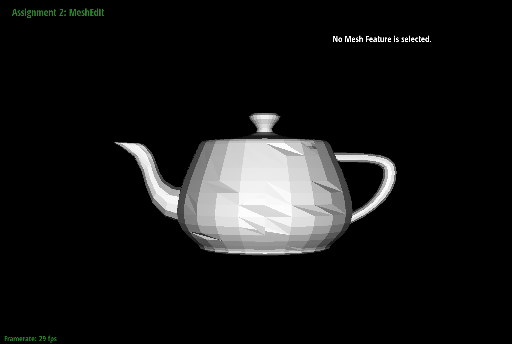

The edge flip operation was done by first identifying all halfedges, vertices, edges, and faces involved
in the two triangles adjacent to the selected edge. The pointers for these elements were then reassigned
by updating the next, twin, vertex, edge, and face references for the halfedges involved in the flip by using
the setNeighbors() function for simplicity. This rewires the mesh so that the edge that is passed in is
replaced with a new edge that connects the opposite vertices. After the flip the halfedge pointers for
the vertices, edges, and faces involved in the flip operation are updated in order to maintain the rest
of the original mesh structure.
Debugging the edge flip implementation was initially challenging because it required carefully
rewiring several interconnected mesh components. Initially it was difficult to determine how each halfedge,
vertex, edge, and face should be updated after the flip. It helped to visualize the connectivity with a
diagram before implementing the flip in code. The
Stanford CS248 MeshEdit documentation
for edge flipping, as well as the diagram (depicted below), was useful in solidifying my understanding
of the edge flip operation.
